Glimpsis archive
Every past spot-the-sign image, with the answer, why it fits and a pearl. Newest first.
13 past puzzles, up to Friday 6 November 2026. Today’s and future puzzles are never shown here.
November 2026
#13 · Friday 6 November 2026 Hard
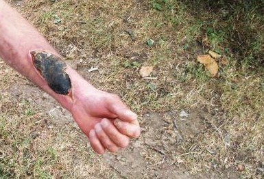
Source page by CDC/Archil Navdarashvili, Georgia (Republic) (cropped) · Public domain · via CDC Public Health Image Library A black scab
A farm worker who skinned a sick cow last week. The sore isn't painful, but the arm is swollen.
Answer: Cutaneous anthrax
Why: A large black eschar on the forearm with surrounding swelling.
Pearl: A painless black eschar with a lot of swelling around it should prompt you to ask about animals and hides. Cutaneous anthrax is very treatable with antibiotics, but notify public health.
Play this puzzle#12 · Thursday 5 November 2026 Medium
Source page by CDC · Public domain · via CDC Public Health Image Library Look at the legs
A child with poor growth and little sunlight, who was slow to walk.
Answer: Rickets
Why: Bowed legs (genu varum) from soft, poorly mineralised growing bones.
Pearl: Some bowing is normal in toddlers, but progressive or one-sided bowing needs a look. Rickets is making a comeback in children with dark skin, covering clothing or little sun.
Play this puzzle#11 · Wednesday 4 November 2026 Medium
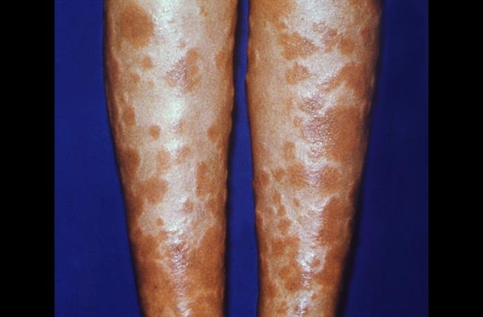
Source page by Dr. R. Huntington · Public domain · via CDC Public Health Image Library Tender shins
A 27-year-old woman with painful red lumps on both shins, achy joints and a recent sore throat.
Answer: Erythema nodosum
Why: Tender, raised red nodules over both shins: inflammation of the fat beneath the skin (panniculitis).
Pearl: Erythema nodosum with hilar lymphadenopathy is Löfgren's syndrome (sarcoidosis), which usually settles by itself. Check for strep, TB, IBD and medicines.
Play this puzzle#10 · Tuesday 3 November 2026 Easy
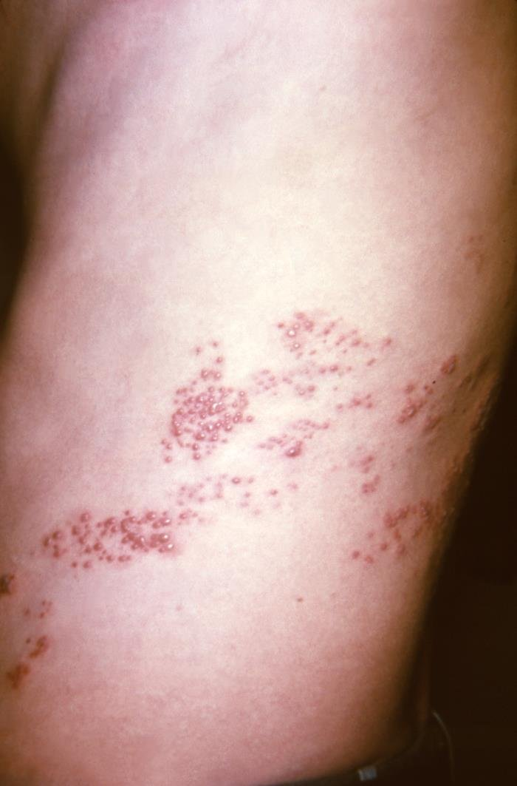
Source page by CDC/K.L. Herrmann · Public domain · via CDC Public Health Image Library A painful stripe
A 68-year-old with three days of burning pain on one side of the trunk, now with a rash in the same spot.
Answer: Shingles (herpes zoster)
Why: Clustered vesicles on red skin in a band following a single dermatome, on one side only.
Pearl: Start antivirals within 72 hours of rash onset. Vesicles on the tip of the nose (Hutchinson's sign) mean the eye may be involved. A vaccine is available for older adults.
Play this puzzle#9 · Monday 2 November 2026 Easy
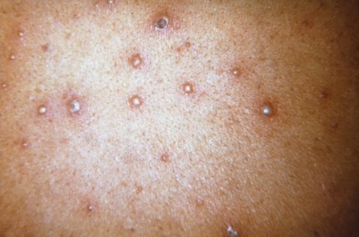
Source page by CDC/K.L. Herrmann · Public domain · via CDC Public Health Image Library Itchy spots, all over
A 24-year-old childcare worker with a mild fever and an itchy rash that started on her trunk two days ago.
Answer: Chickenpox (varicella)
Why: Clear vesicles on red bases alongside crusted lesions: crops at different stages at the same time, the hallmark of varicella.
Pearl: Lesions at different stages side by side means chickenpox; all at the same stage should make you think of smallpox or mpox. Adults and pregnant women get sicker, so antivirals matter more.
Play this puzzle#8 · Sunday 1 November 2026 Genius
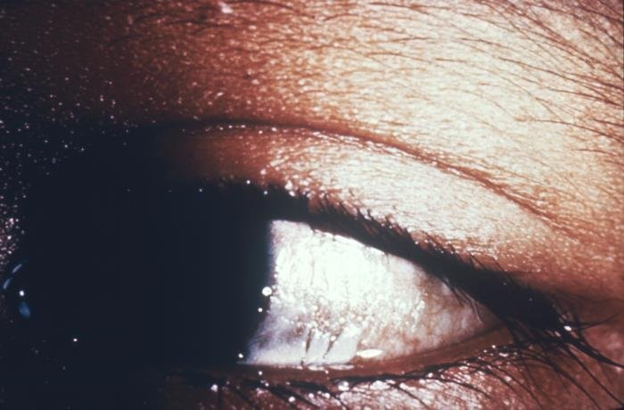
Source page by CDC · Public domain · via CDC Public Health Image Library Look at the eye
A person in a famine-affected area with night blindness and dry eyes.
Answer: Bitot's spots
Why: A foamy, keratinised plaque on a dry conjunctiva.
Pearl: Vitamin A deficiency is a leading cause of preventable blindness in children worldwide. Severe measles can tip a child into it, which is why vitamin A is part of measles treatment.
Play this puzzle
October 2026
#7 · Saturday 31 October 2026 Hard
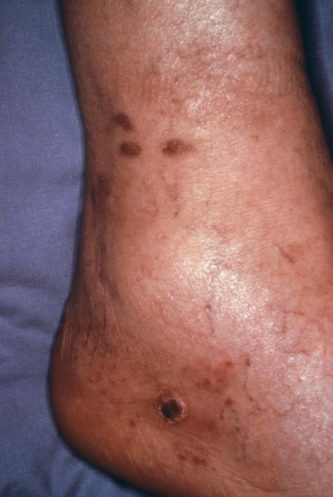
Source page by CDC/Dr Steve Kraus · Public domain · via CDC Public Health Image Library Purple marks
A 41-year-old with weight loss, not previously tested for HIV, and painless purple patches on the leg.
Answer: Kaposi sarcoma
Why: Purple-brown patches and papules around the ankle and foot.
Pearl: Kaposi sarcoma is an AIDS-defining illness and often improves with HIV treatment alone. It can also affect the mouth, gut and lungs.
Play this puzzle#6 · Friday 30 October 2026 Hard
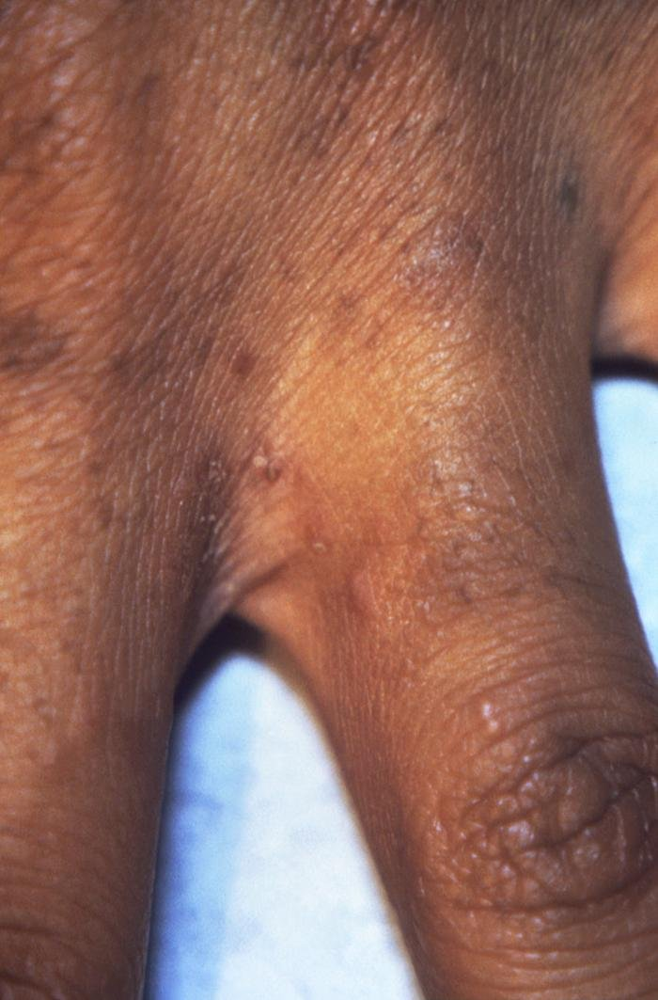
Source page by CDC/J. Pledger · Public domain · via CDC Public Health Image Library Itchy at night
Everyone in the household has had an intense itch for weeks, worst at night.
Answer: Scabies
Why: Small itchy papules in the finger web space, a favourite site for the burrowing mite.
Pearl: Treat all close contacts at once and wash bedding. Itch can last a few weeks after successful treatment, so it's not necessarily failure.
Play this puzzle#5 · Thursday 29 October 2026 Medium
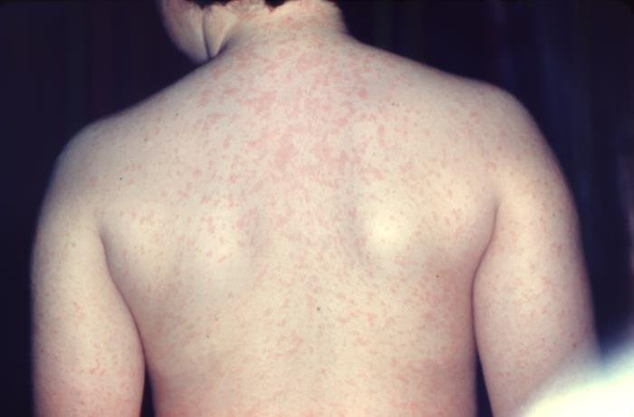
Source page by CDC/Dr Heinz F. Eichenwald · Public domain · via CDC Public Health Image Library Look at the back
An unvaccinated young person, five days into a fever with cough, runny nose and red eyes. The rash began on the face.
Answer: Measles
Why: A blotchy red maculopapular rash, merging into patches over the back.
Pearl: Measles is one of the most contagious infections known. The rash starts behind the ears and on the face and moves down. Two doses of MMR protect about 97%.
Play this puzzle#4 · Wednesday 28 October 2026 Medium
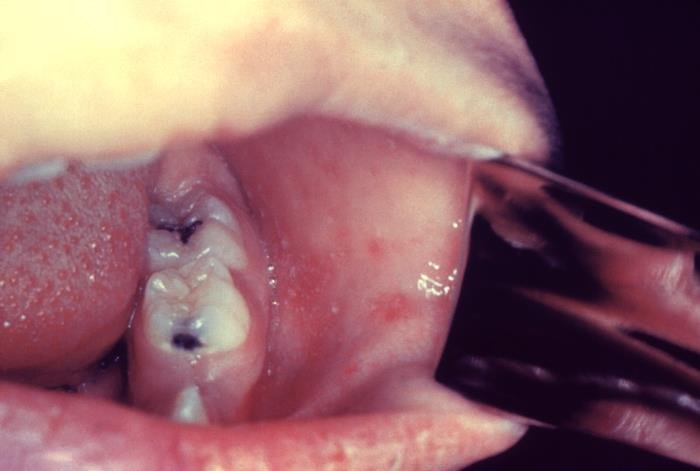
Source page by CDC/Dr Heinz F. Eichenwald · Public domain · via CDC Public Health Image Library Look inside the cheek
An unvaccinated 22-year-old with three days of high fever, cough, runny nose and red eyes. No rash yet.
Answer: Koplik spots
Why: Tiny white-grey spots on red buccal mucosa, opposite the molars.
Pearl: Koplik spots are pathognomonic of measles and appear before the rash, fading as it arrives. Measles is highly infectious, so notify public health and isolate.
Play this puzzle#3 · Tuesday 27 October 2026 Easy
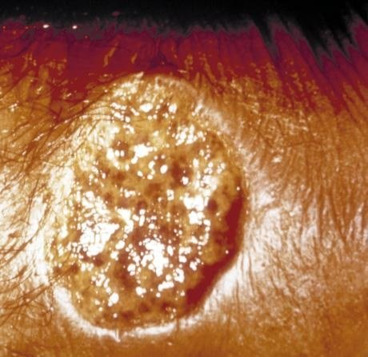
Source page by CDC (cropped) · Public domain · via CDC Public Health Image Library The sore that won't heal
A 34-year-old aid worker back from rural Afghanistan has a painless ulcer on her forearm. It started as a small bump where she was bitten by insects at dusk three months ago.
Answer: Cutaneous leishmaniasis
Why: A round, crusted ulcer with a raised, rolled border: the classic 'volcano' sore of cutaneous leishmaniasis.
Pearl: Cutaneous leishmaniasis is one of the WHO's neglected tropical diseases, with hundreds of thousands of new cases a year. Many sores heal alone over months but leave scars; some species can later spread to the nose and mouth.
Play this puzzle#2 · Monday 26 October 2026 Easy
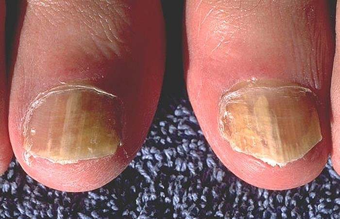
Source page by CDC/ Dr. Edwin P. Ewing, Jr. · Public domain · via CDC Public Health Image Library Thick yellow nails
A 67-year-old who swims at the local pool says his big toenails have slowly turned thick, yellow and crumbly.
Answer: Onychomycosis (fungal nail infection)
Why: Thick, yellow, streaky great toenails with crumbly debris lifting from the free edge.
Pearl: Confirm with nail clippings for microscopy and culture before months of treatment: only about half of abnormal-looking nails are fungal. Psoriasis is the great mimic.
Play this puzzle#1 · Sunday 25 October 2026 Genius
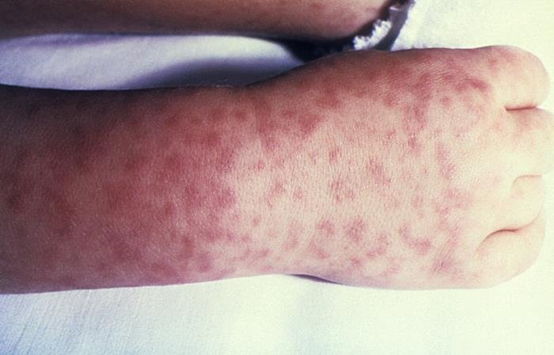
Source page by CDC · Public domain · via CDC Public Health Image Library A spotty wrist
A child in North Carolina is feverish with headache and muscle aches, five days after a family camping trip. The rash started at the wrists and ankles.
Answer: Rocky Mountain spotted fever
Why: Small blanching macules turning petechial over the wrist and back of the hand: a centripetal spotted-fever rash.
Pearl: Start doxycycline on suspicion, at any age: delays beyond day 5 sharply raise the death rate, and the classic triad of fever, rash and tick bite is present in only a minority at first. Related rickettsial spotted fevers occur worldwide.
Play this puzzle